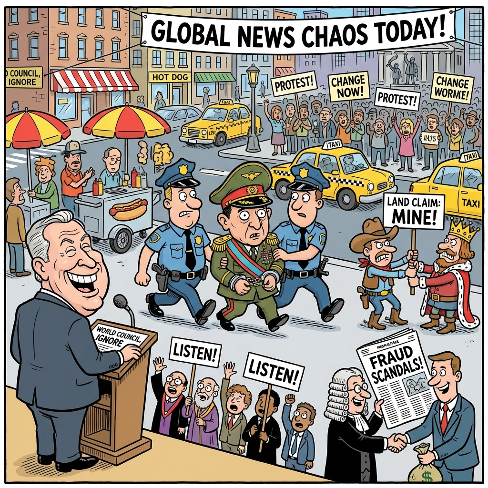

The Daily Globe: U.S. Forces Capture Venezuelan President Nicolás Maduro in New York, Tim Walz Drops Out Amid Child Care Fraud Scandal, and Maduro's Capture Reignites Debate on Venezuelan Exodus in Brazil
Published on 2026-01-06

World
- U.S. Forces Capture Venezuelan President Nicolás Maduro in New York
The dramatic arrest has ignited global debates on sovereignty, international law, and accusations of U.S. hypocrisy compared to inaction against allies like Israel.
- Marco Rubio Dismisses UN Criticism of U.S. Policy
Rubio's statement preferring unilateral U.S. action over international rules sparks controversy on future foreign relations.
- Trump Renews Claims to Greenland Sovereignty
President Trump's repeated assertions over the Arctic territory reignite debates on strategic importance and ownership.
USA
- Tim Walz Drops Out Amid Child Care Fraud Scandal
Minnesota Governor decides against third term as investigations into welfare fraud in child care programs intensify.
- Allegations of Media and Political Cover-Ups in Child Abuse Cases
Resurfaced scandals highlight claims of protection for pedophiles among elites.
- Major Outlets Accused of Withholding Pre-Attack News
WaPo and NYTimes criticized for suppressing stories ahead of a major attack.
Brazil
- Maduro's Capture Reignites Debate on Venezuelan Exodus in Brazil
Event prompts renewed discussions on immigration pressures and regional sovereignty.
- Banco Master Scandal Implicates STF Justices Moraes and Toffoli
Alleged banking fraud involves top judges and TCU, fueling corruption debates.
- Brazil Joins China and Russia in Condemning U.S. Action in Venezuela at UN
Criticism in Security Council meeting highlights geopolitical tensions.
Topic Index
- Maduro arrest
- US Venezuela intervention
- international law hypocrisy
- Greenland sovereignty
- Tim Walz scandal
- child care fraud
- media political cover-ups
- Banco Master fraud